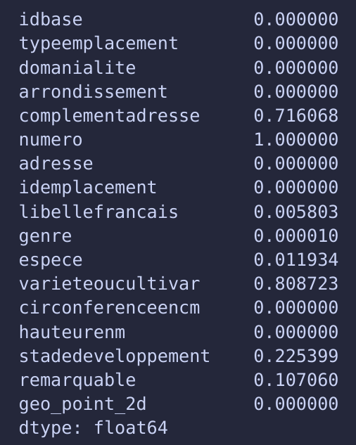
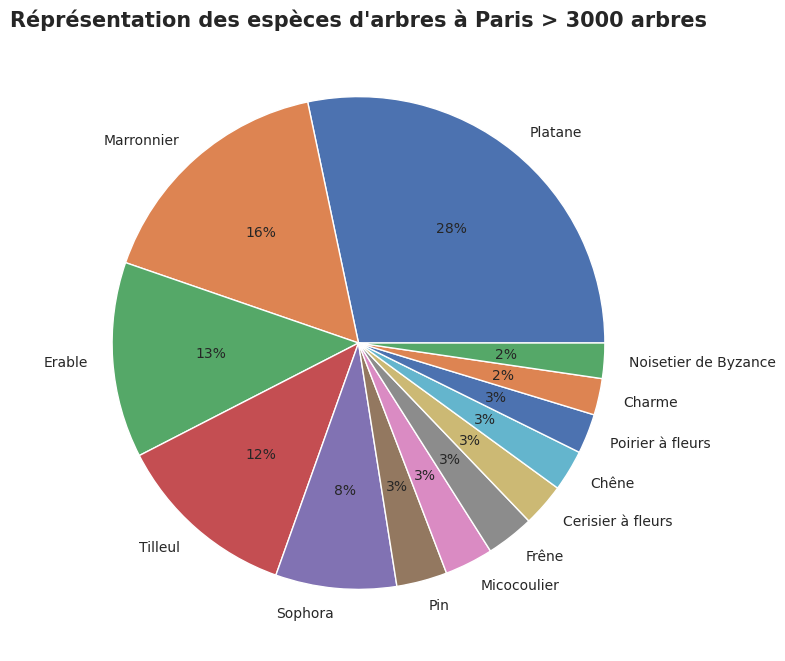

Projet 1 Openclassrooms Analyse des arbres de Paris

Présentation du Projet
- Contexte : Participation à un Challenge: dans le cadre du programme"Végétalisons la ville"
- Objectif:
Réalisez une analyse exploratoire sur le jeu de données sur les arbres de la ville de Paris
Présentation du Projet
- Règle du challenge :
- Livrable attendu :
Installer un environnement virtuel dédié pour ce challenge
Les données doivent être exploitées avec python
Support de présentation de notre analyse
Jupyter notebook de l'analyse
Environnement virtuel et choix des libraries
1.Environnement virtuel
- Création d'un environnement virtual en local sous ubuntu via Annaconda Nommé Projet_data_arbre- Version python du projet : python 3.11.4
2.Librairies utilisées :
Présentation des données
- Jeu de données en Open data disponible sur le site opendata paris.Données regroupant les arbres gérées par la ville de paris.
- Données disponible dans différents format via l'api ou téléchargement direct
Contenu du Dataset
- Notre dataset contient les données de 207641 arbres de Paris
Informations disponibles sur les arbres :
- ID
- Adresse
- Géolocalisation
- Espèces
- Arbre Remarquable
- Hauteur/circonférence
- Stade de développement
Nettoyage des données : Suppression des colonnes inutiles
- Les colonnes typeemplacement,numero
,complementadresse sont à supprimer
Nettoyage des données : Suppression des valeurs abbérentes
Le z-score

Nettoyage des données : Suppression des valeurs abbérentes
Calcul du z-score sur notre jeu de données
- Z-score en fonction de la hauteur et la Circoncéférence des arbres
- Dataset contenant 2356 outliers
Analyse de données Graphique:Représentation des Arbres dans paris
- 197 espèces d'arbre différentes à paris
- Diversification des espèces :
enjeux et climatique et de la survie des arbres